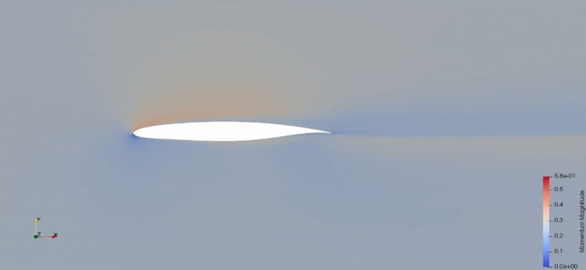

Only RANS (only solve)
In the case mesh and run, we already have the existing geometry and its mesh, then we only start from the solving part. Therefore, the mesh file (.su2) is neccessary to run the case.
Steps:
- Setting the input for the simulation
- Using existing geometry and mesh
- In function
run_aerodynamic_analysis,- Solve using SU2
- Read results from the runtime log and save them as csv and vtu
- Visualize the result using Paraview
Inputs
import numpy as np
from Core.Data import Data
from Components.Solver import Solver
from Components.Geometry import Geometry
from Components.Geometry.Wing.Segment import Segment
from Components.Mesh import Mesh
from Run_aerodynamic_analysis import run_aerodynamic_analysis
def Input_data():
working_dir = r"/home/doktorand/Software/PyAeroSweep-Stan-V3/PyAeroSweep/Test_Cases/Only_RANS"
# ------------------------------- SOLVER SETTINGS ----------------------------------------------------------- #
#
Solver_settings = Solver()
Solver_settings.working_dir = working_dir
Solver_settings.name = 'SU2' # SU2 or Fluent
# Solver dimensions
# 2d or 3d for SU2
Solver_settings.dimensions = '2d'
# Only available for SU2 in 3D
# defines half od the shape or a full shape analysis (Only symmetric works for now)
Solver_settings.symmetric = True
# SST or SA for SU2
Solver_settings.turbulence_model = 'SST'
# Number of processors
Solver_settings.processors = 7
# Cauchy convergence criteria
# Could be either LIFT or DRAG
Solver_settings.monitor = "LIFT"
Solver_settings.tolerance = 5e-7
Solver_settings.max_iterations = 100
Solver_settings.save_frequency = 100
# Warm start
# YES or NO
Solver_settings.warmstart = 'YES'
# SU2 reference config file name which will be updated
Solver_settings.config_file = 'Run_airfoil_template.cfg'
# ------------------------------- FREESTREAM SETTINGS ------------------------------------------------------- #
#
Freestream = Data()
Freestream.Mach = np.array([0.21,0.25])
Freestream.Altitude = np.array([0,2000]) # in meters
Freestream.Angle_of_attack = np.array([0.0,3.0,5.0]) # in degrees
# ------------------------------- GEOMETRY SETTINGS --------------------------------------------------------- #
#
Geometry_data = Geometry()
# Geometry to analyze
''' Could be airfoil or wing
Airfoils can be parametrically defined using the PARSEC methods
Wings are defined only using the existing CAD file and work either for
straight tapered wings with or without the kink'''
Geometry_data.type = 'airfoil'
# Reference values
Geometry_data.reference_values = {
"Area" : 2.62,
"Length" : 2.62,
"Depth" : 1,
"Point" : [0.25*2.62,0,0] # reference point about which the moment is taken
}
# Flag to use PARSEC parametrization or to use already existing airfoils
Geometry_data.generate = False
# ------------------------------- MESH SETTINGS ---------------------------------------------------------------- #
#
Mesh_data = Mesh()
# Flag to mesh the shape or not
Mesh.meshing = False
# Defined the OS in which Pointwise is used
# WINDOWS or Linux
Mesh.operating_system = 'Linux'
# Mesh filename for either the newly generated mesh or an eisting mesh
Mesh.filename = 'su2meshE_existing.su2'
# ----------------------------------------------------------------------------------------------------------------------------- #
#
# Pack all inputs
Input = Data()
Input.Solver = Solver_settings
Input.Freestream = Freestream
Input.Geometry = Geometry_data
Input.Mesh = Mesh_data
return Input
if __name__ == '__main__':
Input = Input_data()
run_aerodynamic_analysis(Input)
Result
The magnitude of momentum at altitude 2000 m, speed = 0.25 Mach and angle of attack 3 degree. 